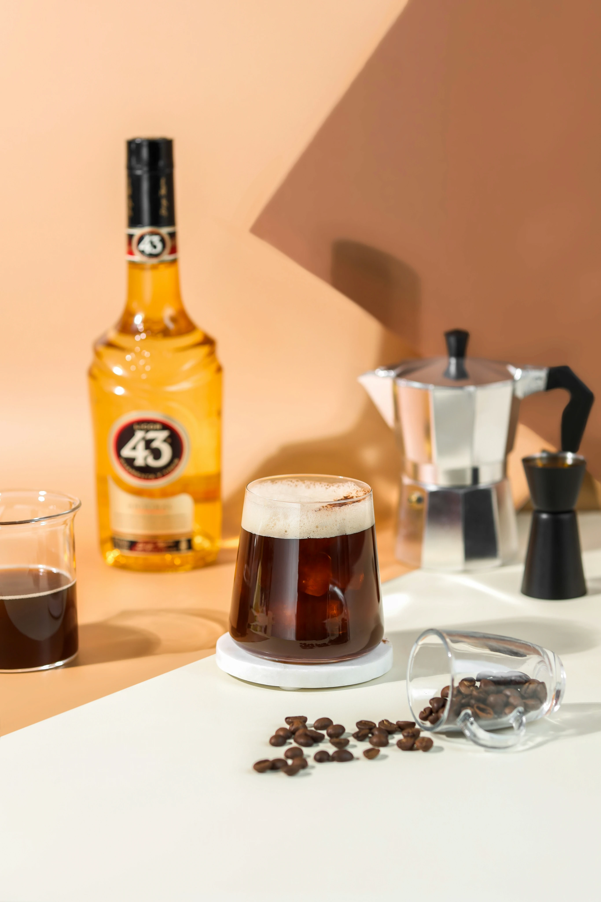
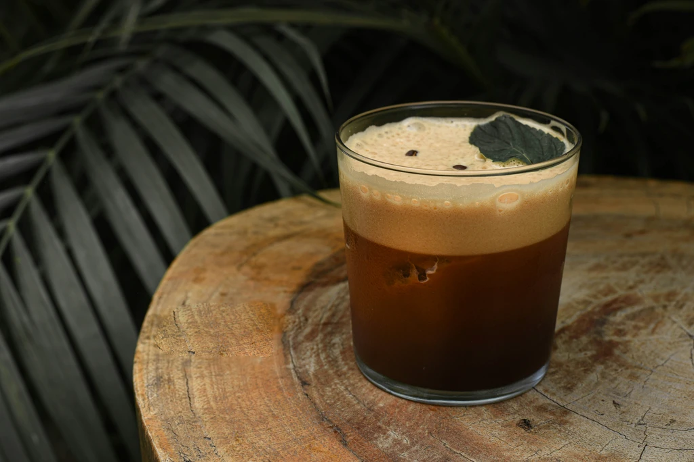

In twilight's glow or morning's blink,
In buzzing cafes or by the sink,
When coffee meets 43's bold ink,
A carajillo whispers, "such a great drink."

No fancy equipment needed. Just two ingredients and a shaker.
Shake 2 oz. espresso with 2 oz. Licor 43 and strain into a glass with ice. Add a coffee bean garnish if you're feeling fancy.
Use decaf espresso instead of regular to fit your lifestyle. Same smooth taste, no late-night regrets.
Add spices, smoke the glass, swap in brandy or tequila. The carajillo is your canvas—go crazy.